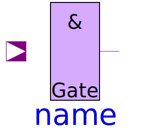
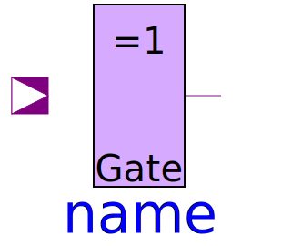
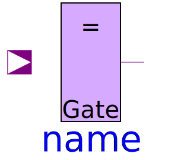

Gates contains the basic gates according to standard logic as they are provided in the Basic package. Additionally they contain an InertialDelaySensitive component They are composed graphically, not using any equations.
| Name | Description |
|---|---|
| InvGate with 1 input value, composed by Not and sensitive inertial delay | |
|  AndGate | AndGate with multiple input |
| NandGate with multiple input | |
| OrGate with multiple input | |
| NorGate with multiple input | |
|  XorGate | XorGate with multiple input |
|  XnorGate | XnorGate with multiple input |
| BufGate with 1 input value, composed by Not and sensitive inertial delay |